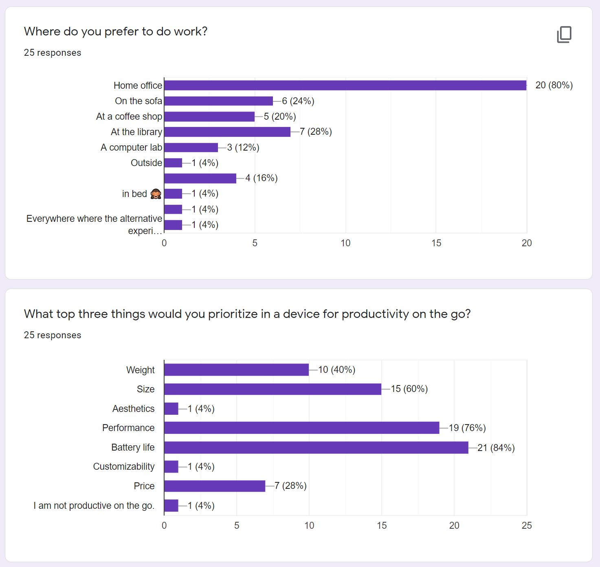
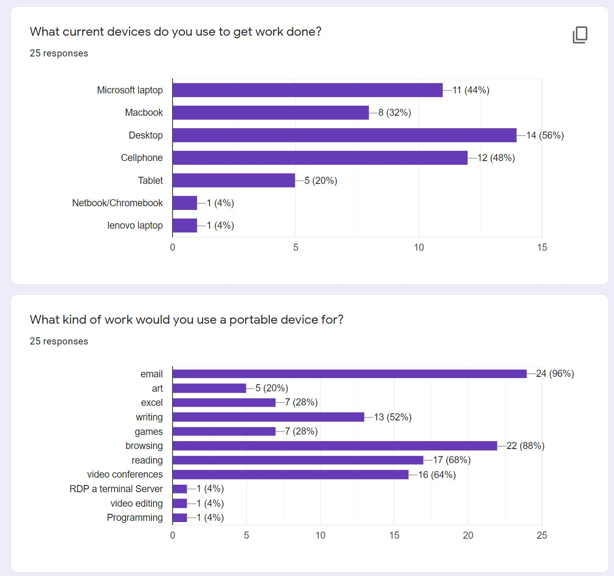
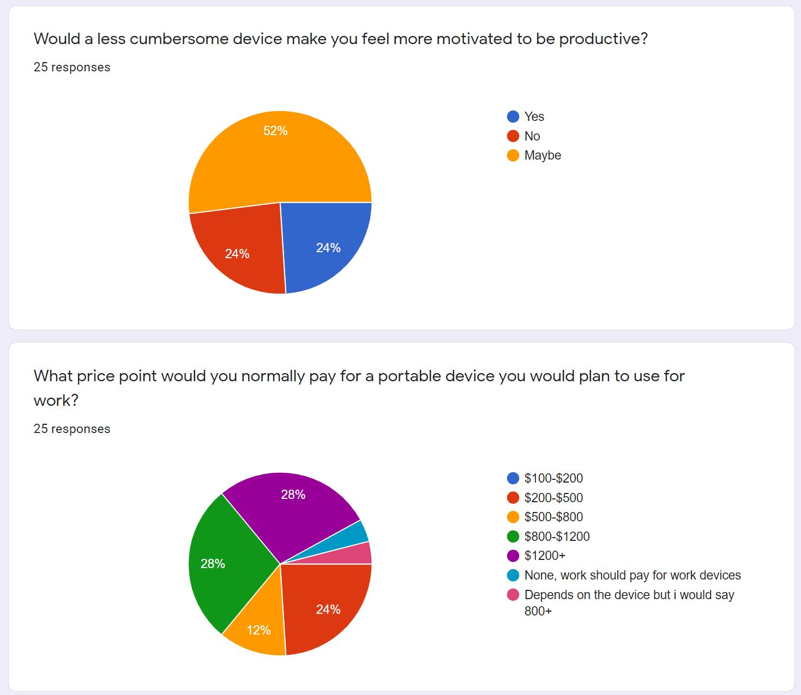
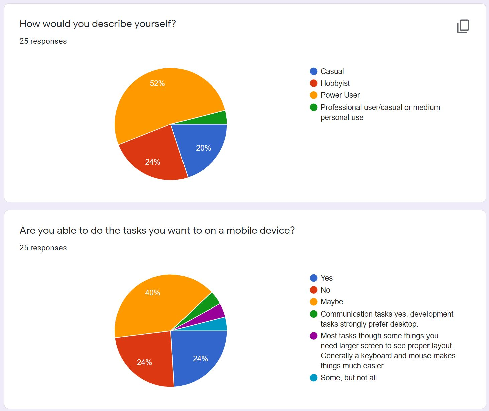
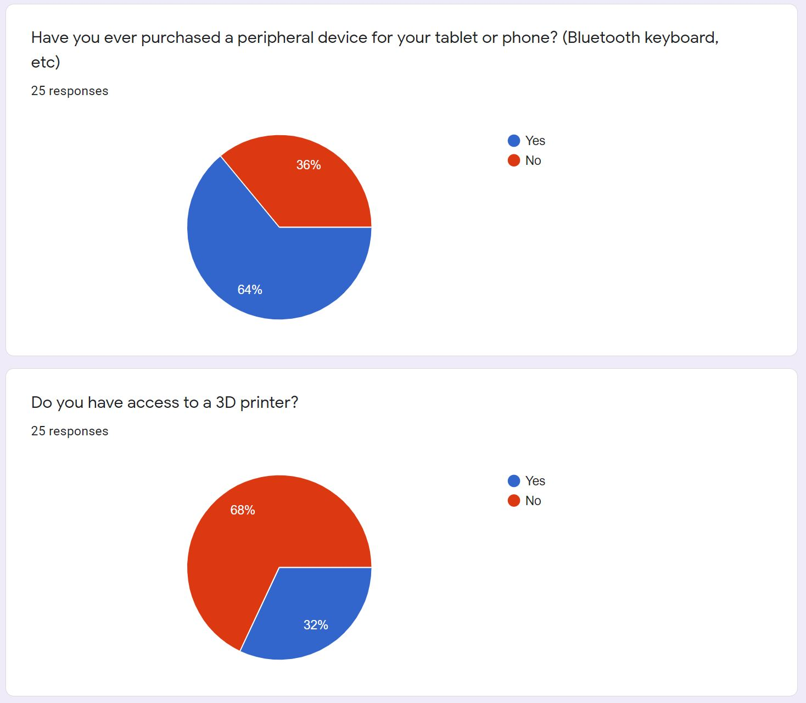
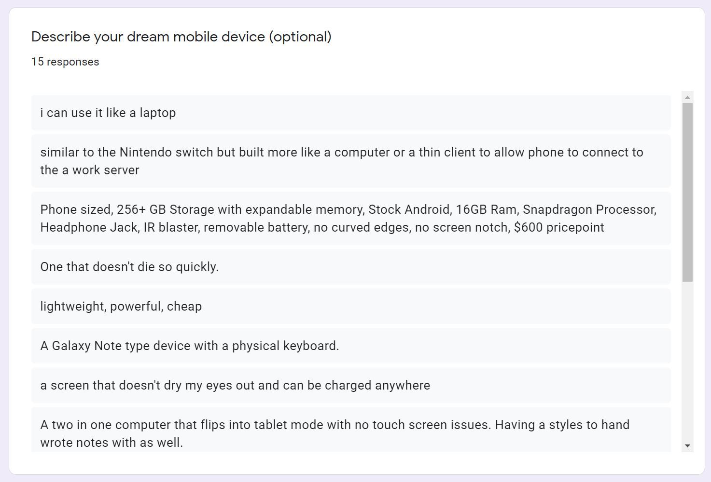
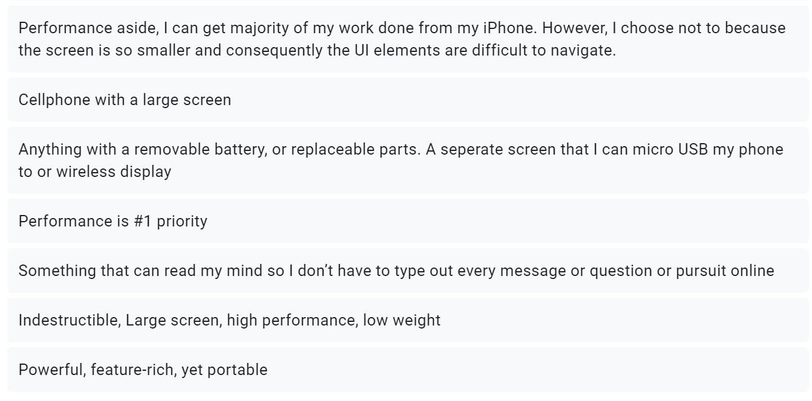

Ideation & Prototyping Week 10
Research for Design #2 Research with Stakeholders
Survey Results and Analysis
This week to learn more about my stakeholders, I created and distributed a survey based on some things I wanted to learn for my product as well as questions suggested I should do from interviews that I did as well. For my survey, I decided that it would be best to not push what I had made already and get some data without too many clues on what my product was. I able to get a good amount of people to do my survey, I believe most of them were between the ages of 18-30 which is my targeted demographic. Some of the data were pretty surprising to me and others made sense the more I thought about it.  The first thing I asked was about where people liked to work, it made sense to me that most would be most productive in a home office where everything is ideally setup. Luckily combined with the other options which are my target audience added up to more than the home office option. For the prioritization, it seems like most people prefer performance and battery life rather than how small and light their mobile devices are and don't really care too much about looks. I guess when I think about it, large phones are pretty popular and people using gaming laptops aren't too uncommon.  For what people currently use to do work, desktops won but surprising not by too much, but surprisingly more people use their phones to work than I thought and unsurprisingly tablets are still not seen as productive devices. I guess more people have portable computers these days than desktops. I think that if more people knew about using ipadOS, that might help bring the numbers up for tablets. When looking at what people use their portable devices for, I guess most people use them for email and browsing with reading and video conferences close behind. To me, it tells me that most people work in jobs that require a lot of communication and that they perform low-performance tasks on mobile devices like browsing and reading. It seems that most people don't do extracurricular things outside of a job, or maybe people only associate work with their job.  Over half of people were not sure if a lightweight device would promote productivity while the other half was a split between yes and no. This tells me that most people are open to the idea while some need to buckle down at a powerful machine. Based on the price, it seems people are willing to pay more for their technology. My target demographic was less than $500 so at least that was a quarter of the results. I think I maybe should have phrased it in a way where this was to be a companion device rather than a primary work device.  The majority of people were power users which reflect accordingly based on the previous answers as well as if people are able to do their work on the go. It seems most people were actually not sure if what they do could be done portably.  This questions purpose was to see if people have bought anything similar before, it seems that they have which is a good sign for me. Touch screens are nice but I guess most people will get mice and keyboards. For the 3D printers, I suspected that most people wouldn't have access to one, but surprisingly they are more popular than I thought since about a third of people do.  This last question I put out actually hit the nail on the head perfectly without me describing my product at all. People do want to have a laptop-like device with keyboards and desire things like bigger screens. This was probably the most valuable question, I'm pretty glad I saved it for the end, I think that getting people to think about their portable devices before describing their dream device worked out nicely. Interviews
Due to the uncertain times I was only able to meet one person physially while the other ones were met with online.Anne-Laure Fayard (Associate Professor of Innovation, Design and Organizational Studies in the Department of Technology Management and Innovation at NYU Tandon School of Engineering.) + members of the fund
Her feedback was that I used a middle approach where I made a rough prototype and did research through design which isn't an abnormal strategy. She suggested maybe making multiple versions like a lite version and a power version for different users since it is supposed to be modular. During this meeting I also talked with two other members of the Prototyping fund, they mentioned how much ergonomics was important to them. They were the type to have a more elaborate set up on a desk with foldable mounts than have a lap device on the go. They however did not have concerns for the weight for their uses. The main feedback was to know my targetedv audience.Elizabeth New (NYU MakerSpace Manager)
We talked about the construction of the product and some interesting methods and solutions I could use such as soldering brass threaded inserts into my 3D prints. I learned that for my thin aluminum that I should use a CNC milling method since waterjet cutting would possibly spread my material apart. She said that she wouldn't be the type to need such a product since she needs a full workstation but thinks it is a pretty great design. We discussed how this design could be shared or sold. One of my ideas was keeping the design open-source so that people could openly modify it and make it for themselves, especially students who did not have a lot of money but had access to things such as maker spaces and 3D printers. Going with this route would easily spread my design to many people much more easily especially in the DIY/tinker community. A strategy she mentioned was that if I were to try to make a profit, then I would have separate pieces available to order such as the CNC pieces if someone couldn't get that part but had a 3D printer. The other idea she had was to sell more luxury parts like magnet upgrades or nicer hinges. The main feedback was to design for them and not for yourselfSreeja (from the prototyping group)
She said that she already had an Ipad Pro with an attached keyboard, she likes how light it is but wished it weren’t so expensive Size, weight, and battery life were her main concerns, and having something easy to read would make her feel more productive. She’s the type of person who likes having her work everywhere, from trains to coffee shops, and doing basic things such as taking notes, reading, email, streaming, browsing, and art. She’s also open to trying to build it as well. She seems like the type of person that I originally had my device designed around.Tarun (from the prototyping group)
He uses both a laptop and tablet based on the required power level but wouldn’t mind if it were a merged product. He doesn’t use a keyboard for his iPad but would enjoy one since the touchpad keyboard is uncomfortable for him and did not go for the magic keyboard because of the price point. Said that if he had a desktop then this sort of enclosure would be something he would be interested in. For him, the size was most important and battery least important compared to the majority which preferred the opposite. He is the type who enjoys a light weight comfortable product though which is also my intended audience. He’s more cautious about trying to make a device for his expensive iPad so he would rather buy the product than to try making it.Overview
Overall I think these interviews and the survey was a very educatonal and useful part of this process. It really gave me a better idea on what people really want as well as gave me some great ideas on how to impliment the final product.
home
while (!deck.isInOrder()) {
print 'Iteration ' + i;
deck.shuffle();
i++;
}
print 'It took ' + i + ' iterations to sort the deck.';